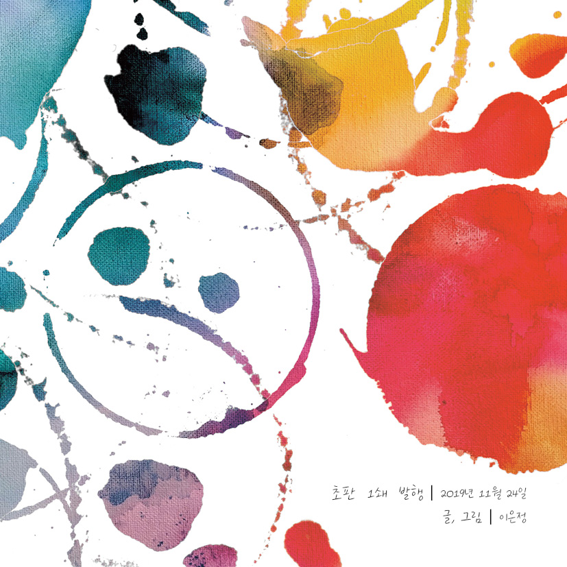

November 2019 - December 2019
나비
stamping & book design
나비
'별별 이야기2'의 또다른 캐릭터 '나비'의 이야기.
유기묘 이야기를 소행성 C-27083에 살고 있는 고양이 외계인 '나비'라는 캐릭터를 통해 동화로 풀어냈습니다.
나비의 1인칭 시점에서 진행되는 스토리로, 사람들이 유기묘의 슬픔과 아픔을 이해하고 앞으로는 그들에게 같은 상처를 주지 않길 바라는 마음을 담아 작업했습니다.
사회 인식 개선 프로젝트
유기묘 그림책
스탬핑 기법
은하수 건너 지구와 먼 우주 어딘가에는 소행성 'C-27083'이 있다.
그 소행성에 사는 외계인들의 정체는 지구에서 모습을 바꾼채 살아가고 있는 고양이들.
그들은 침략 계획을 가지고 지구를 왔으나 자연스레 인간과 함께하게 되면서 마음을 열게 된다.
그러나 시간이 갈수록 고양이를 괴롭히거나 존재 자체를 싫어하는 인간들이 생기고,
어렵게 연 마음이었기에 그들은 더욱더 상처받고 만다.
그 중 '나비'라는 외계인은 지구에 있는 동안 나쁜 인간들에게 괴롭힘을 받는다.
눈 밑의 눈물 자국과 잘린 꼬리. 그리고 하나 부족한 수염.
하지만 가장 큰 상처는 마음의 상처다.
그러한 나비를 어떤 꼬마가 돌봐주었고, '나비'라는 이름과 방울 목걸이도 그 꼬마의 선물이다.
하지만 결국 지구에서의 명을 다해 소행성으로 돌아온 나비는 인간에 대한 경멸과 증오심으로 가득차게 되고, 인간을 멸망시키기 위해 다시 지구로 향한다.
나비
Stamping
스탬핑과 아트웍

나비
Story
나비 이야기

나비
Book
북디자인